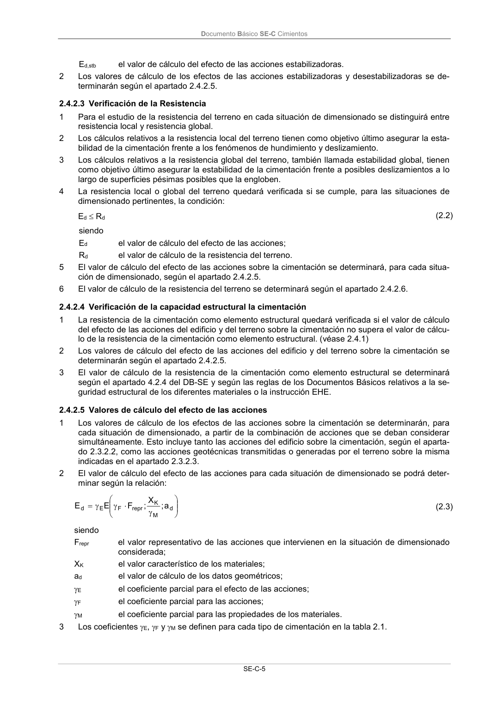
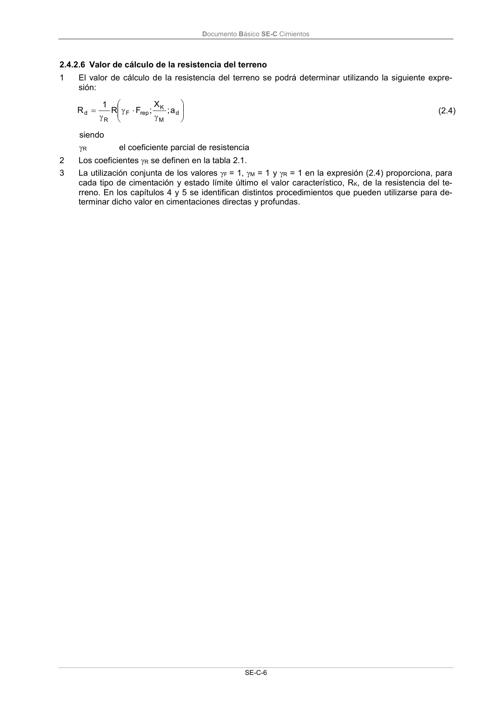

DB-SE-C Cimientos · edición 2019-12-20 · capa oficial
Documento DB-SE-C-oficial · SHA-256 del PDF a71133f4b0dca253e45ea3071c70f2a512354bcc5cd841bf89b1a502f567ac5e
Copia fiel del PDF fuente · Fuente oficial
Ficha de la disposición en la fuente oficial
Formatos: JSON del segmento · Markdown
2.4.2.5 Valores de cálculo del efecto de las acciones 1 Los valores de cálculo de los efectos de las acciones sobre la cimentación se determinarán, para cada situación de dimensionado, a partir de la combinación de acciones que se deban considerar simultáneamente. Esto incluye tanto las acciones del edificio sobre la cimentación, según el aparta- do 2.3.2.2, como las acciones geotécnicas transmitidas o generadas por el terreno sobre la misma indicadas en el apartado 2.3.2.3. 2 El valor de cálculo del efecto de las acciones para cada situación de dimensionado se podrá deter- minar según la relación: d M K repr F E d a ; X ; F E E (2.3) siendo Frepr el valor representativo de las acciones que intervienen en la situación de dimensionado considerada; XK el valor característico de los materiales; ad el valor de cálculo de los datos geométricos; E el coeficiente parcial para el efecto de las acciones; F el coeficiente parcial para las acciones; M el coeficiente parcial para las propiedades de los materiales. 3 Los coeficientes E, F y M se definen para cada tipo de cimentación en la tabla 2.1. Documento Básico SE-C Cimientos SE-C-6

